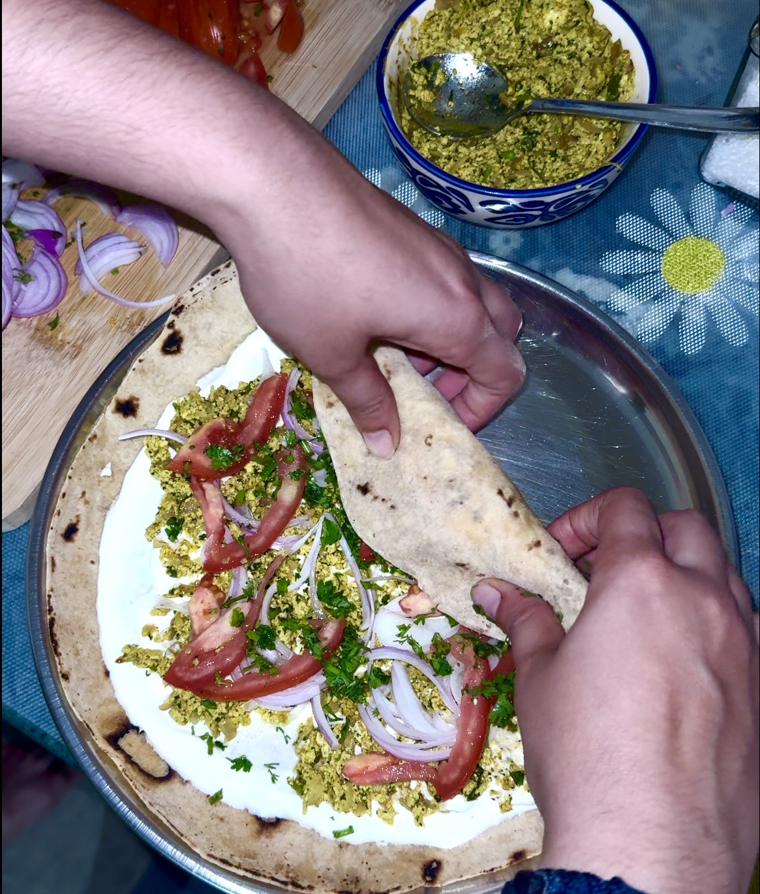

The Story
This isn't café paneer roll. This is the version you make at 11pm after a long ride, when you have half a block of paneer and nothing else going on. Spiced hard, rolled tight, toasted until the wrap crackles.
Kitchen king masala does the heavy lifting here. The amchur brings a sharp tang that cuts through the richness of the paneer. The Greek yogurt cools everything down. Eat it while it's still warm enough to burn your fingers a little.

What You Need
For the Filling
The Masala
For the Roll
The Crunch Layer
How It's Done
Heat a tablespoon of oil in a wide pan over medium-high heat. Once it shimmers, add the cumin seeds and let them pop and sputter for about 30 seconds — they should turn a shade darker and smell toasty, not burnt. Add the finely chopped garlic and let it roast until it turns golden at the edges. This takes about a minute. Don't rush it; this is where the flavour foundation is built.
Add the chopped onions and green chillies into the pan. Toss to coat in the garlicky oil. Keep the heat at medium-high and cook, stirring occasionally, until the onions turn slightly brown at the edges — not caramelised, just colour with a little bite still left. This should take 5–6 minutes.
Turn the heat down slightly. Add the red chilli powder, kitchen king masala, turmeric, amchur, and kasuri methi all at once. Crush the kasuri methi between your palms before it goes in — it releases a lot more flavour that way. Toss quickly and stir the masalas into the onion base for about 60 seconds. The raw smell of the spices should give way to something toasty and complex. If it's sticking, a splash of water helps.
Add the grated paneer to the pan along with half the coriander. Mix well so every strand of paneer is coated in the masala. Season generously with salt. Keep the heat medium and sauté for 2–3 minutes until the mixture turns aromatic and comes together. The texture should be loose and crumbly, not wet. Finish with the remaining coriander, toss once, and take off the heat.
Lay a chapati or wrap flat. Spread a generous layer of Greek yogurt across the centre — this is your cooling agent and the glue that holds everything together. Add a few slices of raw onion, some julienned tomato, and a scatter of fresh coriander. Squeeze about a quarter of a lemon over the vegetables.
Spoon a good portion of the paneer filling down the centre of the wrap. Roll it firmly — tight enough that it holds together, loose enough that it doesn't burst. Place seam-side down on a hot dry tawa over medium heat. Toast for about 1 minute per side until the exterior is lightly charred and crisp. Serve immediately while the outside still crackles.
Before You Cook
Grate it rather than crumbling by hand. The finer texture means more surface area, which means every bit picks up the masala evenly. Fresh paneer also matters — frozen tends to release water and make the filling soggy.
Three teaspoons of Kitchen King plus one of red chilli is a warm, assertive heat — not painful. If you're going mild, drop the chilli powder to half a teaspoon. If you want more fire, add an extra green chilli rather than more powder.
Dry mango powder brings a sharp citrus note that makes the whole roll taste brighter. Don't skip it. If you don't have amchur, a squeeze of lemon directly into the filling works as a substitute, but add it after you take it off heat.
Chapati keeps it light. Paratha makes it indulgent. Either works — but if you're using store-bought wraps, warm them first on the tawa before assembling or they'll crack when you roll them.